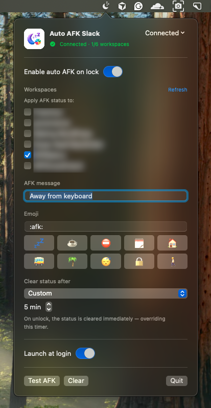
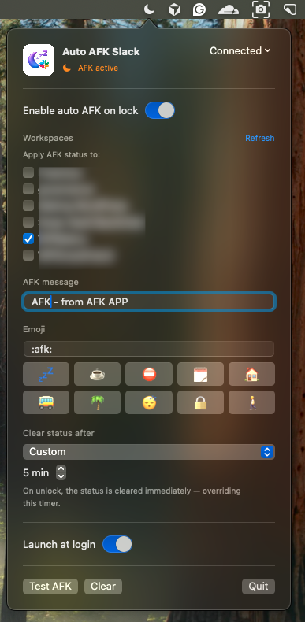
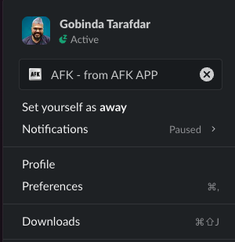

Lock-aware status
Sets AFK on lock, clears on unlock. The one job it does, it does reliably — no menu-bar fiddling, no shortcuts to remember.
The moment your screen locks, your Slack status flips to away — with your message, emoji and timer. Unlock, and it clears itself. No login, no admin, no babysitting.

Install it once. After that it just mirrors what you already do — lock, step away, come back.
On first launch it reads the Slack session already on your Mac from the desktop app. No password, no OAuth screen, no workspace admin approval.
Manual lock or auto idle-lock — it sets your AFK message + emoji on the workspaces you chose, with the expiry timer you picked.
Back at the keyboard, your status is removed instantly, overriding the timer — exactly like cancelling a status by hand.


Your teammates see you're away on every device, including the Slack mobile app, because the status lives on Slack's servers, not just your Mac.
And it stays out of your way: if you set a status — “Lunch”, “In a meeting” — or you're on Do Not Disturb or snooze, Auto AFK leaves it untouched. It only ever clears a status it set itself.
Sets AFK on lock, clears on unlock. The one job it does, it does reliably — no menu-bar fiddling, no shortcuts to remember.
Set “Lunch” or “On a call” yourself and lock the Mac for its idle timer? Your status is preserved — not replaced, not wiped on unlock.
If a workspace is in Do Not Disturb or snoozed, it's skipped entirely.
Slack's presets — 30 min, 1 hour, today, this week — plus your own custom minutes.
Apply AFK to one workspace or several — tick exactly where it should act.
It reads all the workspaces you're already signed into in the Slack app — every one across your working life — so you never hunt for tokens. Just tick the ones you want.
It doesn't install a Slack app or ask a workspace owner for approval. It reuses the session already on your Mac, so it works globally on personal and company workspaces alike.
Event-driven — it sleeps until your screen locks. No polling loop chewing your battery or RAM.
One-time install, optional launch at login. It keeps working without restarts.
One binary for Apple Silicon and Intel. Menu-bar only — no Dock icon, custom message & emoji.
Your Slack session is sensitive, so the app is built to keep it on your machine and out of harm's way.
The app talks only to slack.com over HTTPS — the same thing the official client does. No analytics, no telemetry, no third-party servers.
The Slack cookie and tokens are stored in a single Keychain item marked this-device-only, so they never sync to iCloud. Nothing sensitive touches disk or preferences.
Tokens, cookies and your status text are never written to the system log. Verbose diagnostics are off by default.
A one-time macOS Keychain “Allow” — a local OS permission, not a login or admin approval. Hit Disconnect any time, or sign out of all sessions in Slack.
kSecAttrAccessibleAfterFirstUnlockThisDeviceOnly Keychain storage, secret-free logging, and bounds-checked parsing of local files. The app is not sandboxed (it needs to read the Slack desktop app's local session); distribute it with a Developer ID signature + notarization so Gatekeeper trusts it.
Presence is a courtesy to your teammates. This makes it automatic, so nobody has to wonder whether you're there.
Stepped away from the desk? Teammates see it the second you lock — across desktop and the Slack mobile app.
You already lock your Mac when you leave. Accurate presence becomes a side effect of a habit you already have.
Lunch breaks, focus time, DND — all respected. The app never hijacks a status you cared enough to set.
Client, company and side-project Slacks at once — choose exactly where AFK applies and leave the rest alone.
A short break shouldn't turn into a teammate guessing whether you've vanished.
Working with a team, you step away for a few minutes all the time — coffee, a call, a quick errand. And you forget to flip your Slack status. So a colleague pings, waits, wonders, maybe escalates — when the truth is simply that you weren't at the keyboard.
Auto AFK makes your presence honest by default. Lock the lid and your status tells the truth; unlock and it steps back. Teammates instantly know whether to expect a reply — and if something's genuinely urgent, they can still reach out knowing you're away, not ignoring them.
No guessing, no “you there?”, no quiet resentment over an unanswered message. Just a calmer, more transparent way for remote teams to work together — and a small nudge toward healthier work boundaries.

WordPress product marketer · stubborn problem-solver · lifelong Harry Potter devotee
By day I'm the Product Marketing Specialist at WPBakery — the page builder that quietly powers a sizeable corner of the WordPress universe. Before that, I helped a single plugin cross 400,000+ active users through positioning, user research, and a relentless focus on what actually moves the needle.
When the day-job owl flies home, I tinker on my own little workshop of spells — small tools built to scratch real itches. Auto AFK Slack is one of them.
The page builder I do product marketing for.
Docscriber ↗Documentation, conjured.
TheRecaller ↗A memory charm for what you forget online.
TheEditra ↗A video-editing cauldron of my own brewing.
The Quill Press ↗Tech news styled after the Daily Prophet.
Costlas ↗Cost-of-living for 140 countries & 1,377 cities.
# 1. Download and open AutoAFK-1.0.dmg # 2. Drag Auto AFK Slack into Applications # 3. First launch: right-click the app → Open # (it's ad-hoc signed, so Gatekeeper asks once) # 4. Approve the one-time Keychain Allow prompt # 5. Click the menu-bar moon → tick your workspaces
Install once and never think about your Slack status again. It'll be right there, every time you lock the lid.
Universal · macOS 13+ · ad-hoc signed · 2.4 MB
Auto AFK is free and open source. A GitHub star helps others find it, and a small donation keeps the workshop lit.